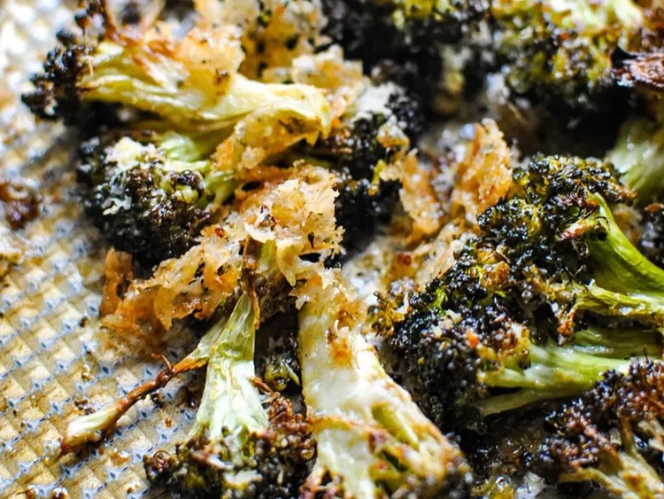

Lemon Parmesan Broccoli
A fast and delicious recipe for lemony cheesy broccoli florets

Ingredients
1 pound broccoli florets
1 tablespoon olive oil
1/2 teaspoon kosher salt
1/4 cup grated Parmesan cheese
1 tablespoon lemon zest
Directions
Preheat the oven to 425 degrees F (220 degrees C).
On a half-sheet pan, toss broccoli florets with olive oil and kosher salt. Spread out evenly on the pan.
Roast broccoli in the preheated oven until tender, 20 to 25 minutes.
Sprinkle broccoli with Parmesan cheese and lemon zest. Return to the oven until cheese is melted and golden brown, 3 to 5 minutes. Keep a close eye!